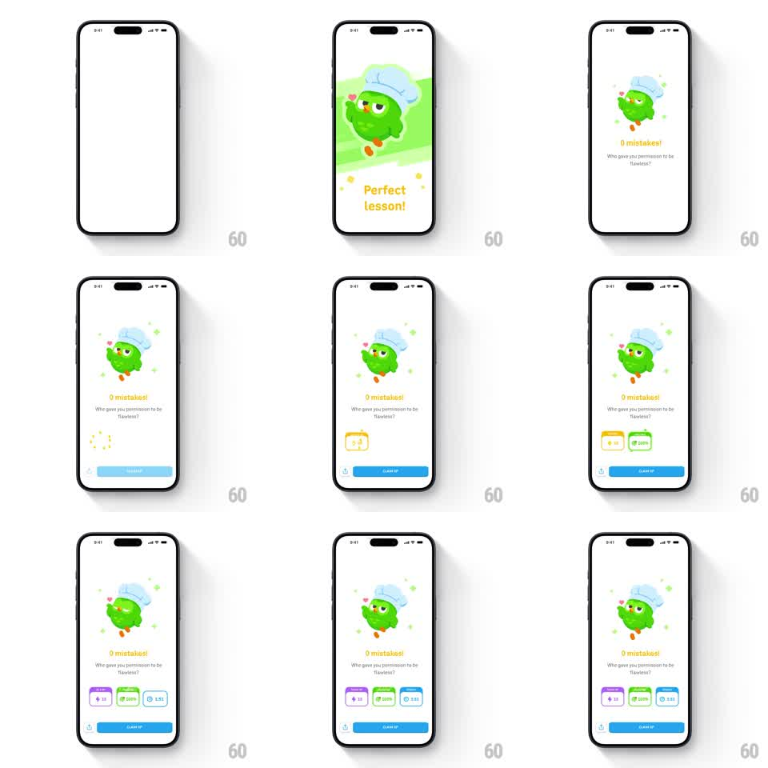

Media
Frame-by-frame

Rebuild this animation 1:1: Duolingo's perfect-lesson celebration - the owl in a chef's hat does a chef's kiss with little hearts floating off its fingers, then reward chips (+10 XP, 100% accuracy, timer) pop in one by one above the CLAIM XP button.

Rebuild this animation 1:1: Duolingo's perfect-lesson celebration - the owl in a chef's hat does a chef's kiss with little hearts floating off its fingers, then reward chips (+10 XP, 100% accuracy, timer) pop in one by one above the CLAIM XP button. ## Integration Integration: stack-agnostic spec - springs given as stiffness/damping, timed motions as duration + curve; map every value to your framework and animation library of choice. ## Scene Light screen: owl wearing a chef hat, hand at beak in the chef's-kiss pose with pink hearts drifting up, "Perfect lesson!" headline, "0 mistakes! Who gave you permission to be flawless?" subline, three reward chips, blue CLAIM XP button. ## Motion spec Pattern: character gag + reward cascade, ~2.5s. - Entrance: owl bounces in (scale 0.7 -> 1, spring ~300/16) on a soft green burst backdrop that scales in behind it (300ms) and then fades to white (500ms), leaving the clean light stage. - Chef's kiss loop: the hand opens and hearts emit (3 hearts, 60ms apart, float up 40px with sway, fade over 900ms); the loop repeats every ~2.5s. - Chips: pop in left to right (spring ~400/16, 130ms stagger), the middle one (100% accuracy) slightly delayed for emphasis. - Copy and button fade/slide in under the mascot (250ms each, ease-out). ## Calibration - Hearts are small and quick - a slow drift turns the gag into a romance scene. - The green burst is a one-shot flourish; don't loop it. ## Reduced motion Owl and chips fade in (250ms); no hearts. ## Don't miss - The subline's sassy copy is part of the design - keep the exact tone. - Chip order is XP, accuracy, time, and only the earned chips appear.